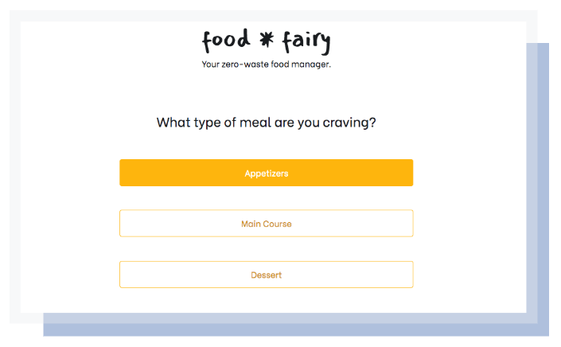

food * fairy
Your zero-waste food manager
Never let your food go bad again. Food fairy tracks expiration dates and recommends customized recipes to make the most out of your ingredients.
.
1. Add groceries with their expiration dates to My Food tab
2. You can keep track of all the foods you have on this tab
3. At any time, select a type of meal on the Recipes tab, and we'll find a suitable recipe for you based on the about-to-expire foods on your list.
4. Let's eliminate everyday food waste together!